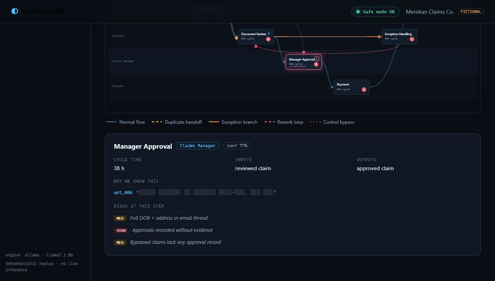

AI systems, automation, analytics, and internal tools
Evidence-backed software for messy real-world workflows.
I build local-first AI systems, operational dashboards, simulations, and trading research tools where the useful part is not the demo sparkle. It is the audit trail: tests, review loops, runnable surfaces, and private-data boundaries.
Open to senior AI/software engineering roles and contract builds for internal tools, workflow automation, analytics products, and evidence-grounded AI platforms.
Positioning
Best fit: messy workflows that need useful software.
The strongest match is client work where the process is scattered across spreadsheets, documents, exports, judgment calls, and private data. I can prototype the workflow, build the operating surface, and harden the parts that prove useful.
Internal Tools
Dashboards, admin surfaces, intake flows, review queues, and workflow automation for teams that need a better daily operating system.
AI Workflow Systems
Private-data-aware assistants, evidence-grounded generation, critic checks, document workflows, and human-in-the-loop controls.
Spreadsheet To Product
Messy CSV, Excel, PDF, and export-driven processes turned into cleaner views, safer imports, and decision-ready dashboards.
Analytics And Decisions
Reporting systems, simulations, scoring, audit trails, and decision packages that make complex work easier to review.
Client problems I solve
Use me when the work is real, manual, and hard to explain.
Fast proof
Three links worth opening first.
These give a quick read on the portfolio's center of gravity: the flagship workflow diagnostic, a live business operations demo, and a clickable design prototype.
Flagship workflow demo
Workflow MRI
Deterministic React workbench that turns fictional spreadsheets, PDFs, emails, screenshots, and notes into a process graph, risks, automations, and handoff package.
Open Workflow MRILive client-style demo
Trades Resource Command Center
Staffing operations dashboard for assignments, open orders, recruiter follow-up, candidate readiness, and customer review flows.
Open Live Staffing DemoClickable design prototype
Recipe Optimizer Mockup
Prototype showing setup, staged runs, candidate review, basket disposition, and refinement loops before production implementation.
Open Optimizer MockupBest work first
Showcase Projects
These are the strongest public portfolio anchors: they have clear product stories, working surfaces, screenshot evidence, and credible engineering depth.

Flagship WorkflowReact / Python / Governance / Evals
Workflow MRI
A deterministic public demo that turns messy fictional operating artifacts into a process map, risk findings, automation candidates, and handoff package.
Live static demo
Safe Mode redaction
4 tests passed
Open case study
 Client Operations
Client Operations
Streamlit / Operations / Data normalization
Trades Resource Command Center
A staffing operations dashboard for assignment endings, open orders, recruiter follow-up, candidate readiness, and customer import review.
Live demo available
Sanitized data
Open case study
 AI Workflow
AI Workflow
RAG / Local LLMs / Streamlit / Critic agents
Job Application Factory
A local-first AI career copilot that drafts application packages from verified evidence and checks unsupported claims before export.
Mock-demo safe
Evidence library
Open case study
 Decision Ledger
Decision Ledger
Python / SQLite / Local-first workflow
Agentic Idea Validation Engine
A lightweight system for moving ideas through hypotheses, test plans, runs, results, decision memos, reusable assets, and promotion decisions.
51 tests passed
Runnable app verified
Open case study
 Analytics System
Analytics System
Analytics / Optimizers / Reports / Mockups
TA Foundation
A large analytics platform split into public-safe slices for reporting, strategy discovery, optimizer packages, diagnostics, and design prototypes.
Clickable design mockup
Report suite
Open case study
 Simulation
Simulation
TypeScript / React / Fastify / Simulation
Empire of Drawdown
A deterministic strategy game with replay, campaign rules, reusable strategy execution, API boundaries, and a browser debrief flow.
169 tests passed
Replay + debrief UI
Open case study
More proof
Supporting Systems
These broaden the story without crowding the first screen: agents, client sites, desktop bridges, and research workbenches that show range.

Replay scoring / Bounded learning
Agent Trading League
Local agent competition dashboard with replay evidence, holdout checks, and patch approvals.
Open case study
Next.js / Prisma / Local AI providers
Fate Scenario Weaver
Creative-AI workbench for turning RPG campaign data into structured scenarios and GM exports.
Open case study
Next.js / TypeScript / Client launch
TraderDan Client Site
Professional futures education site with public pages, pricing paths, and member foundations.
Open case study
Python / DearPyGUI / WebSockets
NinjaAccountManager
Desktop runtime bridge for account, order, position, market-data, and strategy events.
Open case study
Flask / Strategy discovery
MA-Cross Workbench
Research UI for cost-aware sweeps, cross-instrument proof, and anti-overfit checks.
Open case study
Flask / Event studies / Reports
Large Candle Studio
Event-study workbench for forward excursions, reversals, target curves, and strategy blueprints.
Open case studyHow I build
From messy workflow to measurable software
The common thread across the portfolio is not one framework. It is a repeatable process for turning unclear operations, scattered files, manual decisions, and private constraints into systems that can be reviewed, run, and improved.
Map the real work
Interview the workflow, inspect files/screens, and identify where time, risk, and rework accumulate.
Normalize the inputs
Turn spreadsheets, exports, notes, logs, and private artifacts into clean product-facing structures.
Design the control surface
Build the dashboard, queue, ledger, or review path around the decisions people repeat every day.
Add automation carefully
Use AI, agents, routing, scoring, or generation where it reduces toil while preserving human control.
Verify the result
Use tests, health checks, seeded demos, redaction reviews, and evidence panels before claiming progress.
Package the handoff
Leave a runnable surface, public-safe proof, operating notes, and the next improvements clearly queued.
Evidence
Verified Status
What I can build
Services and Strengths
AI Workflow Systems
RAG, local LLMs, agent routing, document generation, and critic validation loops.
Business Operations Tools
Dashboards, review workflows, admin tools, uploads, exports, and process automation.
Analytics And Simulation
Backtest reports, deterministic replay, risk scoring, data checks, and decision packages.
Local-First Platforms
SQLite, Streamlit, FastAPI/Fastify, desktop bridges, and private-data-aware tooling.
Contact
Looking for AI software, automation, or internal tools?
I can help design, build, and ship practical systems that make operations measurable, auditable, and easier to run.